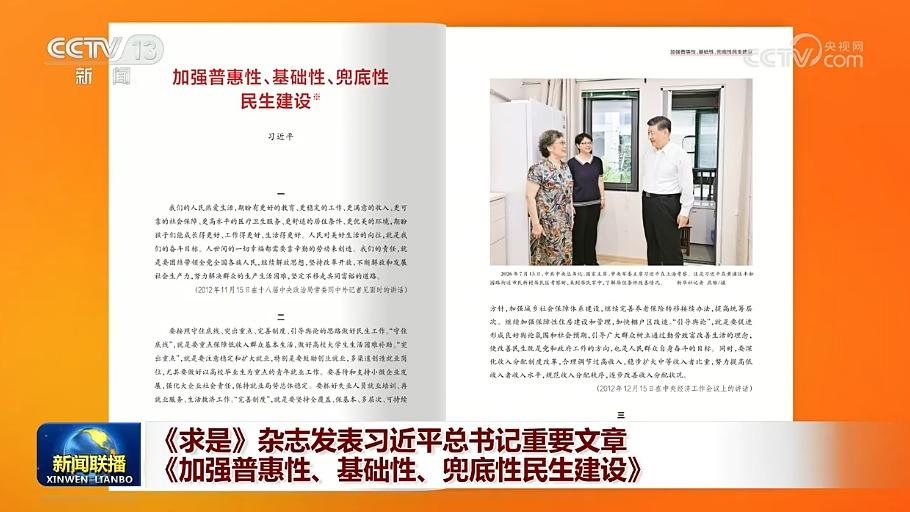
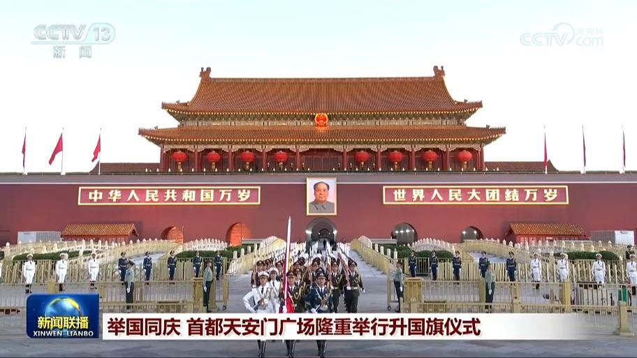
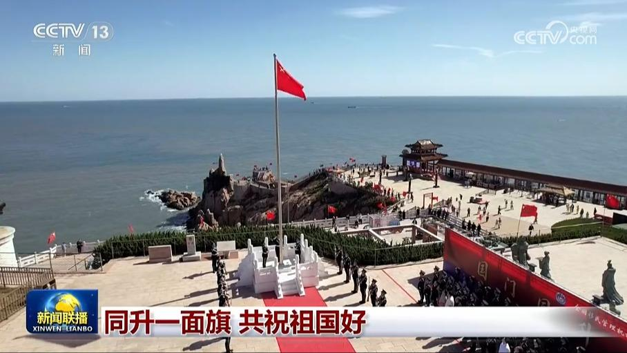
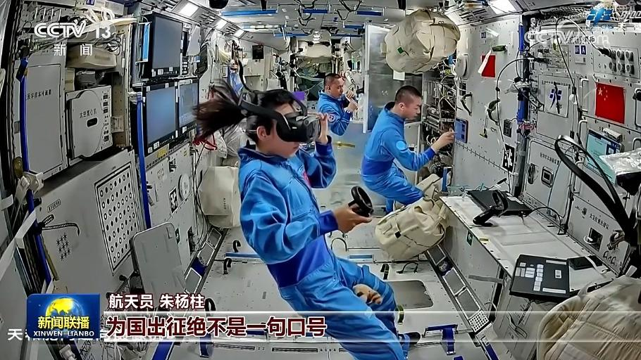
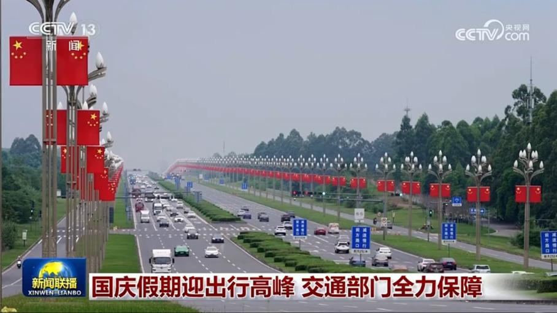

01

《求是》杂志发表习近平总书记重要文章《加强普惠性、基础性、兜底性民生建设》
10月1日出版的第19期《求是》杂志发表中共中央总书记、国家主席、中央军委主席习近平的重要文章《加强普惠性、基础性、兜底性民生建设》。这是习近平总书记2012年11月至2026年1月期间有关重要论述的节录。


10月1日出版的第19期《求是》杂志发表中共中央总书记、国家主席、中央军委主席习近平的重要文章《加强普惠性、基础性、兜底性民生建设》。这是习近平总书记2012年11月至2026年1月期间有关重要论述的节录。
习近平总书记在庆祝中华人民共和国成立77周年招待会上强调，只要我们坚定信心、锚定目标，一步一步扎实往前走，成功就一定属于伟大的中国共产党、伟大的中国人民、伟大的中华人民共和国。总书记的重要讲话催人奋进，广大干部群众表示，要团结一心、接续奋斗，把强国建设、民族复兴的宏伟蓝图变成美好现实。
本台播发央视快评《实现中华民族伟大复兴势不可挡——热烈庆祝中华人民共和国成立77周年》。

在朝着全面建成社会主义现代化强国、实现中华民族伟大复兴宏伟目标奋勇前进的新征程上，今天（10月1日）我们迎来中华人民共和国77周年华诞，北京天安门广场举行了隆重的升国旗仪式，各界群众现场观礼，共同祝福祖国繁荣昌盛、人民幸福安康。

今天（10月1日），从都市到乡村，从高原到海岛，人们升起五星红旗，共同祝福伟大祖国。

苍穹为证，家国同梦。国庆节到来之际，神舟二十三号航天员乘组在距离地球约400公里的中国空间站，向祖国献上深情告白。

记者从交通运输部获悉，国庆假期第一天，交通出行迎来客流高峰，预计全社会跨区域人员流动量3.34亿人次，公路人员流动量占比近九成。今天（10月1日）零时起，七座及七座以下小客车通行高速公路免收通行费，全国高速公路车流量增幅明显，多地高速公路服务区、收费站等通过增加匝道、车道数量，提升通行能力。
这个国庆假期，中央广播电视总台各电视频道、广播频率及新媒体平台推出丰富多彩的节目，陪伴您共度家国同庆、欢乐祥和的假期。
第二十届亚运会 中国队继续位列金牌榜榜首
连日来，我驻外使馆、使团举办国庆招待会等活动，中外各界人士共同庆祝新中国成立77周年。来宾们高度评价中国取得的伟大发展成就，表示期待深化对华合作。
美媒称美伊谈判陷入僵局
大江南北群山巍峨，壮美如画。节目的最后，让我们一同领略多姿多彩的锦绣神州，祝福伟大祖国山河永固、繁荣昌盛。